무선설비기사 (2004-08-08 기출문제)
1과목: 디지털 전자회로
1. 에미터 저항을 가진 CE 증폭기의 특징에 관한 설명 중 옳지 않은 것은 ?
- 전류이득의 변화가 거의 없다.
- 입력저항이 증대된다.
- 출력저항이 증대된다.
- 전압이득이 크게 된다.
(정답률: 알수없음)

2. 이상적인 연산증폭기의 조건중 옳지 못한 것은 ?
- 전압이득이 무한대
- 입력저항이 무한대
- 출력저항이 무한대
- 밴드폭이 무한대
(정답률: 알수없음)
3. RS 플립-플롭 논리회로의 설명으로 틀린 것은?
- 2개의 입력 R, S와 2개의 출력 Q,
 를 갖는다.
를 갖는다. - 입력 R, S가 저레벨일 때 출력 Q,
 는 전상태를 유지한다.
는 전상태를 유지한다. - S가 고레벨일 때 Q,
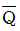
가 모두 저레벨로 된다. - R과 S가 같이 고레벨이면 출력은 불확정이다.
(정답률: 알수없음)
4. 로가리즘 앰프(logarithm amp)는 어느 것인가 ? (단, OP amp는 이상적으로 간주한다.)
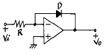
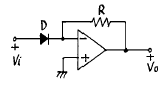
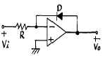
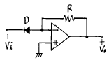
(정답률: 알수없음)
5. 다음 회로에서 그림과 같은 입력파에 대해 출력파형은? (단, 다이오드 D1, D2와 연산증폭기는 이상적이다.)
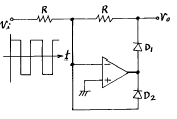
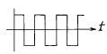
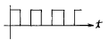
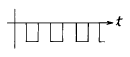
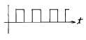
(정답률: 알수없음)
6. PM파와 FM파의 스펙트럼 분포의 관계 중 틀린 것은 ?
- PM파와 FM파의 스펙트럼은 반송파를 중심으로 해서 위, 아래로 변조 주파수 간격으로 무한히 발생한다.
- PM파의 변조지수 mp는 위상편이량 Δ ø 와 같으므로 변조 신호전압에 역비례 한다.
- PM파에서나 FM파에서 변조 신호전압을 높게 하면 대역폭은 넓게 된다.
- 변조주파수를 높게 하면 PM에서는 대역폭이 비례하여 커진다.
(정답률: 알수없음)
7. 비동기식 계수기(counter)와 관계가 없는 것은 ?
- 리플 카운터라고도 하다.
- 동작속도가 느리다.
- 전단의 출력이 다음 단의 입력이 된다.
- 동작속도가 고속이다.
(정답률: 알수없음)
8. 아래 반전증폭회로의 출력전압은 얼마인가 ? (단, 연산증폭기의 개방이득은 ∞라고 본다.)
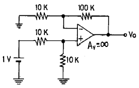
- 5.5[V]
- 10.5[V]
- 11[V]
- 21[V]
(정답률: 알수없음)
9. 그림과 같은 CR회로에서 지수 함수적으로 증가하는 경우는 어느 것인가 ?
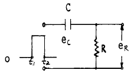
- t1에서의 ec
- t1에서의 eR
- t2에서의 ec
- t2에서의 eR + ec
(정답률: 알수없음)
10. 다음 회로의 출력은 ?
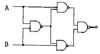
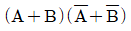
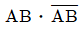
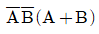
- A B
(정답률: 알수없음)
11. 1,024개의 입력 펄스가 들어올 때마다 한 개의 출력 펄스를 발생시키려고 한다. T플립플롭을 이용할 경우 몇 개가 필요한가 ?
- 4개
- 6개
- 8개
- 10개
(정답률: 알수없음)
12. 45[㎒]의 반송파를 최대 주파수편이 38[㎑]로 하고, 9[㎑]의 신호파로 주파수 변조를 했을 경우 주파수 대역은 ?
- 47[㎑]
- 94[㎑]
- 38[㎑]
- 9[㎑]
(정답률: 알수없음)
13. exclusive-OR와 exclusive-NOR에 해당하는 논리식을 상호 변환한 아래의 식 중에서 틀린 것은?
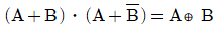
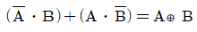
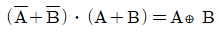
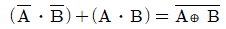
(정답률: 알수없음)
14. 집적회로(IC)에서 고주파 특성을 제한하는 요인은 ?
- 저항
- 다이오드
- 기생 커패시턴스
- 실리콘
(정답률: 알수없음)
15. 그림과 같은 반파정류회로의 동작 설명과 관련이 없는 것은 ?
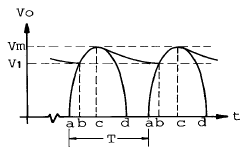
- 평활콘덴서에 충전전류가 흐르는 기간은 파형의 bc 기간 동안이다.
- 리플전압의 피크투피크(p-p) 값은 Vm-V1 이다.
- 입력교류 주기는 T 이며, 리플주기와 같다.
- 출력직류 전압의 평균값은 V1 이 되며, 이 값은 부하에 비례한다.
(정답률: 알수없음)
16. 그림과 같이 연산증폭기를 사용한 위인(Wien)브리지에서 이 발진회로의 발진주파수 f는 ?
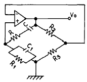
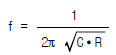
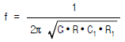
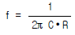
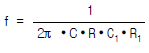
(정답률: 알수없음)
17. 이미터 폴로워(emitter follower)의 특징을 설명한 것중 옳지 않은 것은 ?
- 전압이득은 1 에 가깝다.
- 전류이득은 1 보다 크다.
- 전력증폭에 적합하다.
- 입력임피던스가 크고 출력임피던스는 작다.
(정답률: 알수없음)
18. 플립플롭회로를 활용할 수 없는 것은?
- 주파수분할기
- 주파수체배기
- 2진계수기
- 기억소자
(정답률: 알수없음)
19. 다음 단일 구형파를 미분회로에 통과시키면 출력파형은?
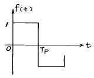
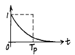
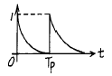
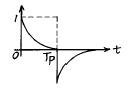
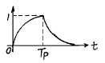
(정답률: 알수없음)
20. 다음과 같은 정보신호를 진폭변조할 때 가장 넓은 대역의 스펙트럼 분포를 차지하게 되는 것은 ?
- 1[kHz]의 정현파
- 1[kHz]의 펄스파
- 5[kHz]의 정현파
- 5[kHz]의 펄스파
(정답률: 알수없음)
2과목: 무선통신 기기
21. 파라메트릭(parametric Amp) 증폭기의 증폭에너지 주공급처는 ?
- 터널다이오드
- 직류전원
- 여진교류전원
- 태양전지
(정답률: 알수없음)
22. 무선 송신기에서의 완충 증폭기와 관계없는 것은 ?
- 발진부 다음 단에 두는 것으로 발진주파수를 부하의 변동으로부터 보호해 준다
- 증폭이 목적이 아니므로 증폭 방식은 A급 혹은 AB급을 사용하여 안정하게 동작시킨다
- 다른 증폭부의 전원을 공동으로 사용한다.
- 발진부와 완충증폭기의 결합은 안정된 발진을 할 수 있도록 소결합한다.
(정답률: 알수없음)
23. 수정 발진회로에서 수정진동자의 전기적 직렬 공진 주파수를 fs, 병렬 공진 주파수를 fp라 하면 안정한 발진을 하기 위한 동작 출력 주파수 fo는 아래 어느 것인가 ?
- fs ＜ fo＞ fp
- fs ＜fo＜ fp
- fs ＞fo＞fp
- fo = fs
(정답률: 알수없음)
24. 송신기에서 스프리어스(Spurious) 발사를 억제하기 위한 대책으로 부적합한 것은?
- 전력증폭단을 C급으로 바이어스한다.
- 공진회로의 Q를 높인다.
- 전력증폭단과 공중선회로에 π 형 결합회로를 사용한다.
- 급전선에 트랩(Trap)을 설치한다.
(정답률: 알수없음)
25. 전계 강도를 측정하고자 할 때 가장 적당한 안테나는?
- 루프 안테나(Loop ANTENNA)
- 애드콕 안테나(Adcoke ANTENNA)
- 고니오메타 안테나(Goniometer ANTENNA)
- 벨리니 - 토시 안테나(Bellini - Tosi ANTENNA)
(정답률: 알수없음)
26. 다음 중 전원회로의 잡음대책에 속하지 않는 것은 ?
- 필터회로를 사용한다.
- 서지(surge) 흡수 소자를 사용한다.
- 실드선을 사용한다.
- 전원회로의 전압을 높게 한다.
(정답률: 알수없음)
27. 전압 정재파비가 3인 어떤 급전선에서 진행파 전압이 10[V]라면 반사파 전압은 몇 [V] 인가 ?
- 3[V]
- 3.3[V]
- 5[V]
- 15[V]
(정답률: 알수없음)
28. 스켈치(Squelch)회로의 입력은 어느 단에서 얻는가 ?
- 고주파증폭단
- 중간주파증폭단
- 저주파증폭단
- 주파수변별기
(정답률: 알수없음)
29. 위성통신의 다원접속방식중 위성의 주파수스펙트럼을 분할하여 각 지구국에 할당하는 방식을 무엇이라고 하는가?
- SDMA
- FDMA
- TDMA
- CDMA
(정답률: 알수없음)
30. AM 송신기의 변조특성의 측정이 아닌 것은?
- 변조 포락선에 의한 방법
- 사다리꼴 도형에 의한 방법
- 타원 도형에 의한 방법
- 전구의 조도에 의한 방법
(정답률: 알수없음)
31. 간접 FM방식에서 사용되는 전치보상회로(pre-distorter)의 설명중 틀린 것은?
- 신호 주파수에 반비례하는 회로이다.
- 미분회로의 일종이다.
- PM을 FM으로 만드는데 쓰인다.
- 입출력 위상차는 90° 이다.
(정답률: 알수없음)
32. 직선 검파기에서 Diagonal clipping현상이 발생하는 이유는 ?
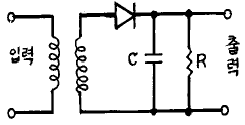
- 입력 전압이 크기 때문에
- 입력 전압이 작기 때문에
- 시정수 R.C가 클 때
- 시정수 R.C가 작을 때
(정답률: 알수없음)
33. 다음중 FM 송신기의 보조회로가 아닌 것은?
- 순시주파수편이 제어회로(IDC)
- Pre-emphasis 회로
- 진폭제한기
- 자동 주파수제어회로(AFC)
(정답률: 알수없음)
34. 아래의 회로중 설명이 잘못된 것은?
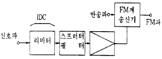
- IDC회로의 리미터에서 신호가 클리프(clip)된 경우에 발생되는 고조파를 억압한다.
- 신호의 주파수 대역을 제한한다.
- IDC회로는 송신전력 스펙트럼의 확산을 일정치 이하로 제한한다.
- 직접 FM송신기로 구성하려면 반드시 전치보상회로를 사용해야 한다.
(정답률: 알수없음)
35. 정류기의 부하단의 평균전압은 200V, 실효값 맥동율이 2%일 때 교류분 실효값은?
- 8[V]
- 6[V]
- 4[V]
- 2[V]
(정답률: 알수없음)
36. super-hetrodyne 수신기에서 중간주파수를 높게 할수록 수신기의 특성이 나빠지는 것은?
- 영상주파수 선택도
- 인입현상
- 감도 및 안정도
- 전송대역 주파수 특성
(정답률: 알수없음)
37. 단상 반파 정류회로에서 정류기의 내부저항과 부하저항이 같을 때 최대 정류 효율은 얼마인가?
- 20.3%
- 40.6%
- 60.4%
- 81.2%
(정답률: 알수없음)
38. 위성의 제어를 위하여 위성에 있는 각 장치의 전기적인 상태 및 센서로 감지한 열에 대한 데이터의 정보를 지구국에 송신하는 기능을 갖는 장치를 무엇이라고 하는가?
- 자세제어시스템
- Telemetry시스템
- 열제어시스템
- 전원제어시스템
(정답률: 알수없음)
39. M/W 중계방식이 아닌 것은?
- 베이스 밴드(Base Band)중계방식
- 헤테로다인 중계방식
- 무급전 중계방식
- 페이딩 중계방식
(정답률: 알수없음)
40. 어떤 수신기의 고주파 증폭이득이 20 [dB], 주파수 변환 이득이 -5 [dB], 중간주파 이득이 60 [dB], 저주파 이득이 25 [dB]라면 입력에 1[㎶]의 전압을 가하면 출력은 몇 [V]인가 ?
- 0.01[V]
- 0.1[V]
- 0.5[V]
- 1[V]
(정답률: 알수없음)
3과목: 안테나 공학
41. 정관형 안테나에 관한 설명이다. 틀린 것은?
- 전리층 반사를 적게 하여 양청구역을 넓힐 수 있다.
- λ /4 수직접지 안테나에 원정관을 설치한다.
- 고유파장을 길게 할 수 있다.
- 실효고를 작게 할 수 있다.
(정답률: 알수없음)
42. 전압 정재파비가 S인 급전선에서 부하의 입사전력 Pi와 부하에 공급되는 전력 PL 과의 비 Pi/PL 는 얼마인가 ?
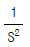
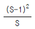
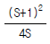
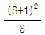
(정답률: 알수없음)
43. 특성 임피던스 Z0=3+j2[Ω ]인 부하에 반사파 없이 최대전력을 전달하려면 다음 중 어떤 특징의 선로를 접속해야 하는가?
- 저항이 10[Ω], 리액턴스가 -10[Ω]인 선로
- 저항이 3[Ω], 리액턴스가 -10[Ω]인 선로
- 저항이 10[Ω], 리액턴스가 -2[Ω]인 선로
- 저항이 3[Ω], 리액턴스가 -2[Ω]인 선로
(정답률: 알수없음)
44. 관내의 유전체가 진공일 때 구형 도파관(TE10 mode)의 차단파장은? (단, 장변은 a, 단변은 b 이다.)
- 2a
- 2b
- a
- b
(정답률: 알수없음)
45. 평행2선식 급전선 중 특성임피던스가 가장 큰 것은?
- 심선의 직경 1.2[mm], 선간격 10[cm]
- 심선의 직경 1.2[mm], 선간격 20[cm]
- 심선의 직경 2.9[mm], 선간격 10[cm]
- 심선의 직경 2.9[mm], 선간격 20[cm]
(정답률: 알수없음)
46. 안테나의 길이가 20[m], 사용 파장이 200[m]로서 λ /4 보다 상당히 짧은 수직접지형 안테나가 있다. 복사저항은 대략 얼마 정도인가 ?
- 약 2[Ω]
- 약 4[Ω]
- 약 20[Ω]
- 약 40[Ω]
(정답률: 알수없음)
47. 복사저항이 35[Ω]이고 손실저항이 10[Ω] 및 도체 저항이 5[Ω]인 안테나의 효율은 몇 [%]인가?
- 25[%]
- 50[%]
- 70[%]
- 80[%]
(정답률: 알수없음)
48. 지구의 반경을 6,370[km]라고 할 때 표준대기의 굴절률이 1.000313 이고 대류권내의 전파통로의 높이를 318.5[m]라 하면 M 단위 수정 굴절률은 얼마인가?
- 313
- 340
- 353
- 363
(정답률: 알수없음)
49. 다음 임피던스 정합방법 중 평행 2선식 급전선에 사용할 수 없는 방법은?
- Y형 정합
- stub에 의한 정합
- taper에 의한 정합
- gamma 정합
(정답률: 84%)
50. 박쥐날개형 안테나를 직각으로 교차시켜 구성한 것으로 여러 단 겹쳐서 사용하며, 단위 안테나의 표면적이 넓게 되므로 실효적으로 안테나의 Q 가 저하하여 광대역 특성을 갖게 되는 안테나는 ?
- 헤리칼 안테나
- 턴스타일 안테나
- 슈퍼 턴스타일 안테나
- 슈퍼 게인 안테나
(정답률: 알수없음)
51. 길이 0.5[m]의 미소 다이폴 안테나에 60[MHz], 전류를 10[A] 흘렸을 때 복사전력은 약 얼마인가?
- 290[W]
- 350[W]
- 790[W]
- 870[W]
(정답률: 알수없음)
52. 서울에서 송신된 FM 방송신호가 부산에서 어떤 시간동안에만 일시적으로 수신되었다면 다음 중에서 어떤 경로의 전파일 가능성이 제일 높은가?
- 라디오 덕트(radio duct) 전파
- 전리층 반사파
- 자기폭풍 전파
- 산악회절이득 전파
(정답률: 알수없음)
53. 파장에 따라 크기를 달리하고 단파대에서 마이크로파대까지 사용할 수 있는 광대역 안테나는 ?
- 대수주기형 안테나
- 빔 안테나
- 롬빅 안테나
- 어골형 안테나
(정답률: 알수없음)
54. 태양의 폭발로 인하여 발생하는 강력한 자외선 방출에 의해 D, E 층의 전자 밀도가 급격히 증가하여 전파의 감쇠가 심하게 발생하는 현상은 ?
- 페이딩
- 자기폭풍
- 델린저 현상
- 공전
(정답률: 알수없음)
55. λ /4 수직접지 안테나에서 안테나의 기전부 전류가 10[A] 일 때, 60[㎞]떨어진 점의 전계강도 E 는 ? (단, 1[㎶/m]를 0 dB로 함)
- 10[㏈]
- 20[㏈]
- 40[㏈]
- 80[㏈]
(정답률: 알수없음)
56. 접어진(folded) 안테나의 특징에 대한 설명으로 잘못된것은?
- TV의 300[Ω] 평행2선식과 직결하여도 거의 임피던스 정합이 이루어진다.
- 전계강도, 이득, 지향성은 반파장 안테나와 동일하다.
- 반파장 안테나에 비해서 도체의 유효 단면적이 크다.
- 실효길이는 반파장 안테나의 2배이고 수신안테나로서 사용할 때 개방전압은 같게 된다.
(정답률: 알수없음)
57. 육상이동통신환경에서 가장 문제가 되는 페이딩은?
- 신틸레이션 페이딩(scintillation fading)
- 다중경로 페이딩(multipath fading)
- 산란형 페이딩
- 감쇠형 페이딩
(정답률: 알수없음)
58. 안테나의 지향성을 높이는 방법이 아닌 것은 ?
- 반사기를 사용한다.
- 반파장 다이폴을 평면상에 배열한다.
- 가능한 한 연장선륜을 여러 개 사용한다.
- 도파기를 사용한다.
(정답률: 알수없음)
59. 다음중 회절현상이 가장 심하게 일어나는 방송파는?
- 중파
- 단파
- 초단파
- 마이크로파
(정답률: 알수없음)
60. 전방 전계의 세기를 Ef, 후방전계의 세기를 Eb 라고 할때 전후 전계비(front to back ratio)를 옳게 표현한 식은?
- 10 log10 Ef/Eb
- 10 log10 Eb/Ef
- 20 log10 Ef/Eb
- 20 log10 Eb/Ef
(정답률: 알수없음)
4과목: 무선통신 시스템
61. 해상에서의 조난 및 인명의 안전에 관한 통신을 목적으로 사용하는 위성에 대한 설명 중 틀린 것은?
- INMARSAT 위성을 말한다.
- 이 위성의 사용 주파수 대역은 L 및 C 밴드이다.
- 이 위성은 항공통신서비스도 제공하고 있다.
- 주로 이용하는 위성은 무궁화 위성이다.
(정답률: 알수없음)
62. 셀룰러 이동전화 시스템에서 "Hand-off"란 무엇인가?
- 이동전화 기지국간 통화종료를 의미한다.
- MSC와 Cell Site간의 정보전송 속도의 변경을 의미한다.
- 한 지역에서 통화도중 다른 지역으로 이동시 통화가 끊어져 버리는 현상을 의미한다.
- 통화중 이동시 인접 기지국간 통화 채널의 자동전환을 의미한다.
(정답률: 알수없음)
63. 연속적으로 변화하는 아날로그 신호(analog signal)를 펄스부호(pulse code)로 변화시키는데 필요한 단계가 아닌 것은 ?
- 부호화
- 복극성화
- 표본화
- 양자화
(정답률: 알수없음)
64. 범세계적인 위성통신방식 중 해당되지 않는 것은 ?
- 위상 위성방식
- 정지 위성방식
- 랜덤(random) 위성방식
- 헤테로다인(heterodyne) 위성방식
(정답률: 알수없음)
65. 전파의 창(radio window)의 범위를 결정하는 요소가 아닌것은?
- 전리층의 영향
- 도플러 효과의 영향
- 대류권의 영향
- 대기 잡음의 영향
(정답률: 알수없음)
66. 어느 무선설비에서 증폭기의 직류입력은 2[㎸], 400[㎃]이고, 효율은 60[%]로 보면 부하에서 나타나는 전력은 ?
- 800[W]
- 600[W]
- 480[W]
- 320[W]
(정답률: 알수없음)
67. 무선통신방식의 최대 단점이라고 볼 수 있는 것은?
- 간섭
- 건설비
- 회선용량
- 통달거리
(정답률: 알수없음)
68. 지구국 안테나가 갖추어야 할 성능 조건이 여러 가지가 있는데 이중 적당하지 않은 것은?
- 고이득이어야 한다.
- 대역폭이 넓어야 한다.
- 지향성 폭이 좁아야 한다.
- 잡음 온도가 높아야 한다.
(정답률: 알수없음)
69. 도약거리(Skip Distance)에 관한 설명 중 잘못된 것은 ?
- 장.중파대에서 많이 생긴다.
- 전리층 반사파가 최초로 지상에 도달하는 점과 송신점사이의 거리를 뜻한다.
- 주간과 야간에 따라서 도약거리가 다르다.
- 도약거리는 사용주파수와 전리층에 입사되는 각도에 따라 변한다.
(정답률: 알수없음)
70. UHF대를 사용하는 통신망을 설계할 때 치국계획상 고려해야 할 점과 거리가 먼 것은?
- 총장비 이득
- 총경로 손실
- 통신망 성능 평가치
- 전력 소모율
(정답률: 알수없음)
71. FM 방식을 AM 방식에 비교할 경우 틀리는 것은 ?
- 레벨 변동이 없다.
- S/N비가 개선된다.
- 미약한 신호의 수신에 적합하다.
- 초단파대 통신에 적합하다.
(정답률: 알수없음)
72. 대기잡음에 속하지 않는 것은 ?
- 클릭(click)
- 그라인더(Grinder)
- 힛싱(Hissing)
- 글로우 방전
(정답률: 알수없음)
73. 마이크로파 통신시스템의 전파방해를 경감하기 위한 대책으로 관계가 없는 것은?
- 안테나의 지향성 개선
- 적절한 차폐물의 이용
- 항공기 이착륙이 빈번하지 않는 곳
- 해변, 호수 등의 반사파 지역 선정
(정답률: 알수없음)
74. 2단 증폭회로에서 초단의 잡음지수 F1=10, 이득 G1=5 이고, 다음 단의 잡음지수 F2=11일 때 증폭기의 종합 잡음지수는?
- 10
- 12
- 15
- 20
(정답률: 알수없음)
75. 다중화된 신호의 증폭시 증폭기의 비직선성 때문에 발생하는 왜곡은 ?
- 에코현상
- 페이딩
- 상호 변조잡음
- 혼선
(정답률: 알수없음)
76. 이동통신시스템에서 기지국의 주요 기능인 것은?
- 이동국감시기능
- Handover 기능
- 이동국과의 무선전송을 위한 기능
- 통화상대번호 저장기능
(정답률: 알수없음)
77. 무선통신의 특징이 아닌 것은 ?
- 전송매개체로 전자파와 빛을 사용한다.
- 무한한 공간을 공통의 전송로로 사용한다.
- 수신점에는 목적외의 전자파가 많이 포함되어 있다.
- 전자파의 대역폭 중 제한된 대역폭을 필요로 한다.
(정답률: 알수없음)
78. 잡음의 종류 중에서 주파수가 증가함에 따라 감소하는 잡음은?
- 산탄 잡음(Shot Noise)
- 열 잡음(Thermal Noise)
- 마이크로포닉 잡음(Microphonic Noise)
- 플리커 잡음(Flicker Noise)
(정답률: 알수없음)
79. 무선통신시스템 이동국의 전력 절감 방안으로 적합하지 않은 것은?
- 간헐적 수신방식의 적용
- 전력제어 방식의 적용
- 통신중 비연속적 송신방식의 적용
- 빈번한 이동국 위치 확인 방식의 적용
(정답률: 알수없음)
80. Ku-Band에서 사용할 수 있는 위성통신용 주파수는 ?
- 1GHz / 2GHz
- 4GHz / 6GHz
- 12GHz /14GHz
- 20GHz / 30GHz
(정답률: 알수없음)
5과목: 전자계산기 일반 및 무선설비기준
81. 코드의 기능이 아닌 것은?
- 분류기능
- 식별기능
- 관리기능
- 순차기능
(정답률: 알수없음)
82. 수신설비로부터 부차적으로 발사되는 전파의 세기는 몇 dBmW 이하이어야 하는가? (단, 수신공중선과 전기적 상수가 같은 의사공중선회로를 사용하여 측정한 경우)
- -24dBmW
- -34dBmW
- -44dBmW
- -54dBmW
(정답률: 알수없음)
83. "CPU 레지스터, 캐쉬기억장치, 주기억장치, 보조기억장치"로 기억장치의 계층구조 요소를 구성하고 있다. 이들 중에서 처리속도가 가장 빠른 것과 가장 느린 것으로 짝을 지은 것은?
- 캐쉬기억장치 - 주기억장치
- CPU 레지스터 - 캐쉬기억장치
- 주기억장치 - 보조기억장치
- CPU 레지스터 - 보조기억장치
(정답률: 알수없음)
84. 데이터버스가 16비트이고 주소 버스가 20비트인 마이크로 컴퓨터의 최대 주기억 용량은 얼마인가 ?
- 256K bytes
- 64K bytes
- 2M bytes
- 1M bytes
(정답률: 알수없음)
85. 현 상태에서 다음 상태로 코드의 그룹이 변화할 때 단지 하나의 비트만이 변화되는 최소 변화 코드의 일종이며, 또한 비트의 위치가 특별한 가중치를 갖지 않는 비가중치 코드로서 산술 연산에는 부적합하고 입출력 장치와 A/D 변환기와 같은 응용장치에 많이 사용하는 코드 체계는?
- 3초과 코드(Excess-3 code)
- 8421 코드(8421 code)
- 그레이 코드(Gray code)
- 해밍 코드(Hamming code)
(정답률: 알수없음)
86. 형식검정 대상기기로서 정보통신부장관이 행하는 형식 검정을 받아야 하는 경우는?
- 국내에서 판매하지 아니하고 수출용으로 제작하는 경우
- 외국으로부터 도입하는 선박 또는 항공기에 설치된 경우
- 개인적으로 판매할 목적으로 외국에서 구입하여 국내에 반입한 경우
- 연구·시험을 위하여 제조하거나 수입하는 경우
(정답률: 알수없음)
87. 전파형식별 공중선전력의 표시로 틀린 것은?
- A1A - 첨두포락선전력
- R3E - 평균전력
- F1A - 평균전력
- F3E - 평균전력
(정답률: 알수없음)
88. 2의 보수로 나타낸 수에서 (-17)+(-4)의 계산결과는 ?
- 10010101
- 11101011
- 11110011
- 10011011
(정답률: 알수없음)
89. 다음의 필요주파수대폭 표시 중 틀린 것은?
- 0.002㎐ = H002
- 400㎐ = 400H
- 12.5kHz = 12K5
- 202㎒ = M202
(정답률: 알수없음)
90. 현재 사용되고 있는 모든 기억 장소를 주기억 장치의 한쪽 끝으로 옮기는 작업을 운영 체제에서는 무엇이라고 하는가 ?
- Placement 전략
- Compaction 전략
- Fetch 전략
- Replacement 전략
(정답률: 알수없음)
91. 다음 중에서 두 숫자(혹은 문자)를 비교하는데 주로 사용되는 논리연산은 어느 것인가?
- AND GATE
- OR GATE
- NAND GATE
- EXCLUSIVE GATE
(정답률: 알수없음)
92. 다음 중 Floating Point 표현의 수들 사이의 곱셈 알고리즘 과정에 해당되지 않는 것은?
- 가수를 곱한다.
- 결과를 정규화 시킨다.
- 가수의 위치를 조정한다.
- 0 인지의 여부를 조사한다.
(정답률: 알수없음)
93. 병렬컴퓨터의 분류에서, 여러 개의 프로세서가 하나의 제어장치로부터 단일 명령어를 받지만, 처리되는 데이터는 서로 다른 프로세서에서 이루어지는 구조는?
- SIMD
- SISD
- MISD
- MIMD
(정답률: 알수없음)
94. 진폭변조(AM)에 의한 무선전화의 단측파대로서 전반송파를 나타내는 것은?
- H2A
- J2A
- H3E
- J3E
(정답률: 알수없음)
95. 무선통신업무에 종사하는 자는 통신보안교육을 몇 년마다 받아야 하는가?
- 1년
- 3년
- 5년
- 10년
(정답률: 알수없음)
96. 2,182kHz를 사용하는 선박국의 주파수 허용편차는 얼마인가?
- 40Hz
- 100Hz
- 200Hz
- 300Hz
(정답률: 알수없음)
97. 메모리로부터 읽은 워드(word)가 오퍼랜드(operand) 자체일 경우 컴퓨터 사이클은?
- 실행 사이클
- Fetch 사이클
- 간접 사이클
- 인터럽트 사이클
(정답률: 알수없음)
98. 다음 중에 정보통신기기인증규칙에 적용되지 않는 것은?
- 형식승인표시
- 형식등록표시
- 전자파적합등록에 관한 사항
- 전자파흡수율측정에 관한 사항
(정답률: 알수없음)
99. 다음 중 개설허가의 유효기간이 5년이 아닌 무선국은?
- 기지국
- 무선방향탐지국
- 간이무선국
- 아마추어국
(정답률: 알수없음)
100. 다음 중 규격전력으로 표시할 수 없는 무선설비는?
- 아마추어 무선국의 송신설비
- 실험국의 송신설비
- 생존정에 사용되는 비상위치지시용 무선설비
- 항공이동업무 무선설비의 송신설비
(정답률: 알수없음)